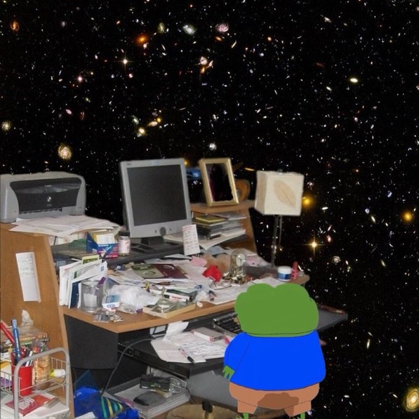

<div class="w3-twothird w3-white w3-container" style="height:700px">
    <div class="w3-padding-64 w3-center">
      <div class="w3-left-align w3-padding-small">
        <p style="font-family: 'Cutive Mono', monospace; margin-right: 150px"<p style="font-family: 'Cutive Mono', monospace; margin-right: 150px"><span style="background-color: #FFFF00"><b>Papers</b></span></p> </p>
        <br>
          
        <br> 
          
        <p style="font-family: 'Cutive Mono', monospace; margin-right: 150px"><a href="https://arxiv.org/abs/2307.00513"><i>Unsupervised denoising of Raman spectra with cycle-consistent generative adversarial networks</i></a>, Ciaran Bench, Mads S. Bergholt, Mohamed Ali al-Badri, arXiv physics.med-ph, 2307.00513 (2023)</p>
        <p style="font-family: 'Cutive Mono', monospace; margin-right: 150px"><a href="https://doi.org/10.7554/eLife.85108"><i>Large-scale electrophysiology and deep learning reveal distorted neural signal dynamics after hearing loss</i></a>, Shievanie Sabesan, Andreas Fragner, Ciaran Bench, Fotios Drakopoulos, Nicholas A Lesica, eLife 12:e85108 (2023)</p>
        <p style="font-family: 'Cutive Mono', monospace; margin-right: 150px"><a href="https://arxiv.org/abs/2305.04714"><i>Enhancing synthetic training data for quantitative photoacoustic tomography with generative deep learning</i></a>, Ciaran Bench, Ben Cox, arXiv physics.med-ph, 2305.04714 (2023)</p>
        <p style="font-family: 'Cutive Mono', monospace; margin-right: 150px"><a href="https://doi.org/10.1364/BOE.476233"><i>Unsupervised segmentation of biomedical hyperspectral image data: tackling high dimensionality with convolutional autoencoders</i></a>, Ciaran Bench, Jayakrupakar Nallala, Chun-Chin Wang, Hannah Sheridan, Nicholas Stone, Biomedical Optics Express 13, 6373-6388 (2022)</p>
        <p style="font-family: 'Cutive Mono', monospace; margin-right: 150px"><a href="https://discovery.ucl.ac.uk/id/eprint/10148082"><i>Data-driven quantitative photoacoustic tomography.</i></a> Ciaran Bench, Doctoral thesis (Ph.D), UCL (University College London) (2022)</p>
        <p style="font-family: 'Cutive Mono', monospace; margin-right: 150px"><a href="https://doi.org/10.1088/1742-6596/1761/1/012001"><i>Quantitative photoacoustic estimates of intervascular blood oxygenation differences using linear unmixing</i></a>, Ciaran Bench, Ben Cox,Journal of Physics: Conference Series 1761 012001 (2021)</p>
        <p style="font-family: 'Cutive Mono', monospace; margin-right: 150px"><a href="https://doi.org/10.1117/1.JBO.25.8.085003"><i>Toward accurate quantitative photoacoustic imaging: learning vascular blood oxygen saturation in three dimensions</i></a>, Ciaran Bench, Andreas Hauptmann, Ben Cox, Journal of Biomedical Optics 25(8) 085003 (2020)</p>
        <p style="font-family: 'Cutive Mono', monospace; margin-right: 150px"><a href="https://doi.org/10.1016/j.bpj.2020.09.013"><i>Modeling Fibrillogenesis of Collagen-Mimetic Molecules</i></a>, Anne E. Hafner, Noemi G. Gyori, Ciaran A. Bench, Luke K. Davis, Anđela Šarić, Biophysical Journal (2020)</p>
      </div>
    </div>
  </div>
